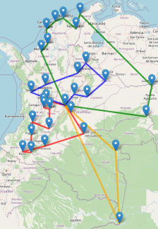
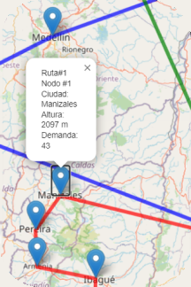
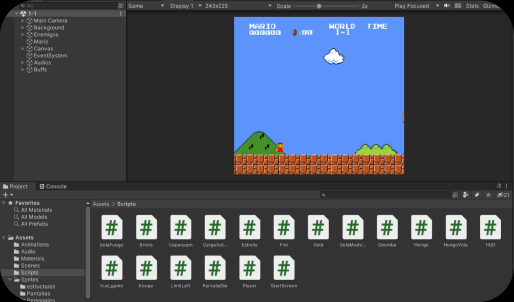

Transposing-app es una aplicacion web escrita en python con el framework Flask, html, css y JavaScript, se trata de un proyecto personal usado por músicos para transportar notas entre las diferentes tonalidades de su intrumento
Solver-UL es un algoritmo de solución del problema de ruteo de vehículos refrigerados capacitados, este algorítmo calcula la mejor ruta posible para diferentes vehículos con restricciones de peso, ventanas de tiempo, altura de los puntos, temperatura, etc. Esto con el fin de reducir el trayecto, la energía consumida y las emisiones del camión.
 En este proyecto construinos 3 productos electrónicos, conectados entre sí por medio de la tecnología IoT, esto se logro usando Blynk como herramienta de sincronizacion de dispositivos en la nube y los productos fueron programados en tarjetas ESP-32 en C++.
Para este proyecto se nos dio como reto hacer una copia al carbón del primer nivel de super mario bros usando el motor unity, se logró recrear al 100% de fidelidad el primer nivel del juego, esto como prueba técnica del desarrollo de videojuegos y programación en C#
Este proyecto fue un video juego para navegador donde el objetivo fue recrear un modo de juego de Vértigo paintball donde los jugadores deben desactivar una bomba en un tiempo determinado, el juego se realizó en el motor unity y se programó en C#.